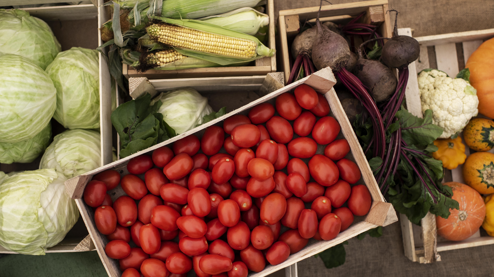
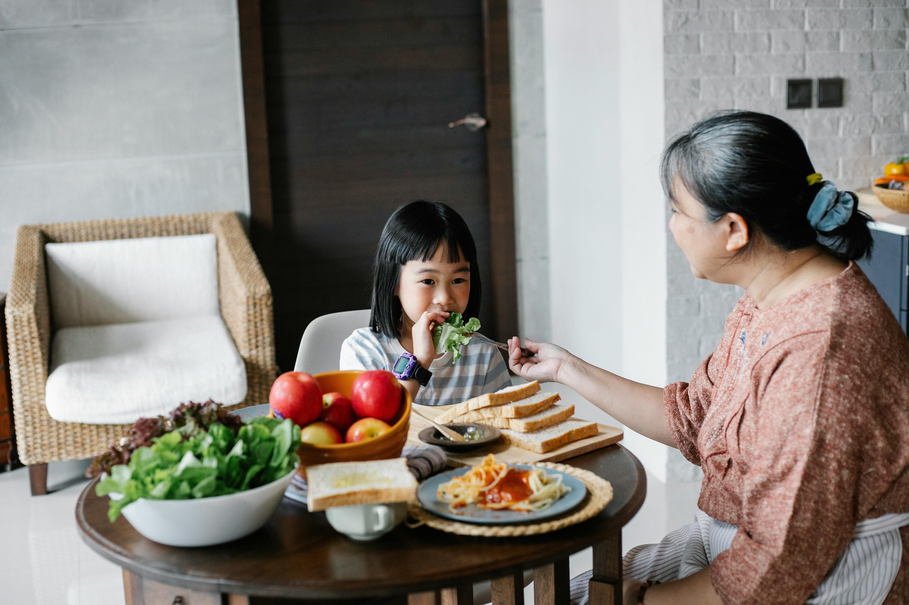

Do Começo ao Prato☀️🥗
Você já parou para pensar no caminho que os alimentos percorrem até chegar ao seu prato?
Do trabalho dos agricultores no campo às feiras e supermercados, existe uma jornada cheia de histórias, sabores e conexões.
Nosso site traz um pouquinho da magia de cada etapa que os alimentos percorrem até chegarem às nossas mesas.
Conhecer essa jornada é essencial para valorizar a conexão entre campo e cidade afinal, sem o campo, a cidade não seria alimentada,
e sem a cidade, o trabalho do campo seria muito mais difícil.
Por isso, essa conexão deve ser celebrada e fortalecida a cada dia.
E aí vamos conhecer melhor essa jornada?😉
🌱 O Plantio
O plantio é o primeiro passo da jornada dos alimentos. Os agricultores preparam a terra com cuidado, respeitando os ciclos da natureza e escolhendo as melhores sementes. Esse processo envolve dedicação, conhecimento e amor pela terra. É aqui que começa a conexão entre quem cultiva e quem consome, unindo campo e cidade em um ciclo de respeito, sustentabilidade e vida.
O Brasil é um dos maiores produtores agrícolas do mundo, essa fase envolve o preparo do solo, a escolha de sementes adaptadas clima da região e o uso de tecnologias que aumentam a produtividade de forma sustentável.
Em regiões como o oeste do Paraná, agricultores familiares utilizam práticas como a rotação de culturas, alternando entre soja, milho e feijão, para manter a fertilidade do solo e evitar pragas. Já no semiárido nordestino, projetos como o Programa Uma Terra e Duas Águas (P1+2) ajudam agricultores a plantar hortas mesmo em regiões secas, usando cisternas para irrigação.
O plantio não acontece só em grandes fazendas: em muitas cidades há hortas urbanas em escolas, praças e comunidades, mostrando que a produção de alimentos também floresce nos centros urbanos.
Mesmo diante de desafios como mudanças climáticas ou acesso a insumos, os produtores rurais se mantém constantes em sua missão. Cada semente plantada é um passo na direção de uma alimentação saudável, acessível e conectada com a realidade urbana. Por isso, valorizar o plantio é valorizar quem cultiva, e compreender que o alimento no prato começa com o trabalho de muitas mãos na terra.

🌾 A Colheita
O momento em que a dedicação do agricultor se transforma em resultado. Depois de semanas ou até meses cuidando da terra e das plantas, chega a hora de colher os frutos desse trabalho. A colheita é uma fase marcada por alegria, mas também por muito esforço físico e atenção ao tempo certo para garantir que os alimentos estejam no ponto ideal.
Em muitas regiões do Brasil, a colheita ainda é feita manualmente, especialmente nas propriedades familiares. Em outras regiões, o uso de maquinários modernos ajuda a tornar o processo mais rápido e eficiente. Mas seja com as mãos ou com tecnologia, o objetivo é o mesmo: levar alimentos frescos e de qualidade até sua mesa🤩
No Vale do São Francisco, por exemplo, as colheitas de manga e uva são feitas com muito cuidado e muitas vezes seguem direto para as cidades ou até para exportação. No Sul do país, a colheita do arroz exige técnica e atenção, já que ocorre em campos alagados, com o uso de equipamentos específicos.
A colheita não é apenas o fim de um ciclo. Assim que ela termina, muitos agricultores já começam a preparar a terra novamente, dando continuidade à produção. Esse ritmo constante mostra a importância da agricultura e o quanto ela depende da dedicação diária de quem vive no campo.

🚛 O Transporte
Após a colheita, os alimentos precisam seguir viagem até os centros urbanos, feiras, mercados e até exportação. É no transporte que começa a ligação mais direta entre o campo e a cidade, conectando o trabalho do agricultor com a mesa do consumidor.
Essa etapa exige cuidado e logística. Frutas, verduras e legumes, por exemplo, são sensíveis e precisam ser transportados rapidamente, muitas vezes em caminhões refrigerados, para manter a qualidade e evitar desperdícios. Já grãos como soja e milho podem ser levados em grandes cargas a longas distâncias, por caminhões, trens ou navios.
No Brasil o transporte enfrenta alguns desafios, como estradas mal conservadas e grandes distâncias entre o local de produção e os centros consumidores. Mesmo assim, milhares de motoristas, muitos deles produtores ou cooperados, percorrem diariamente esses caminhos, garantindo que os alimentos cheguem frescos e em boas condições.
Além disso, o transporte sustentável tem ganhado destaque. Em algumas regiões, cooperativas usam bicicletas, pequenos veículos elétricos ou até barcos em áreas ribeirinhas para reduzir os impactos ambientais.
🧺 A Feira
A feira é o ponto de encontro entre o campo e a cidade. É onde produtores, comerciantes e consumidores se conectam não só por meio dos alimentos, mas também por histórias, cultura e tradição. Mais do que um lugar de compras, a feira é um espaço de convivência e valorização da agricultura.
Nela, encontramos produtos frescos, colhidos há poucas horas, cultivados com dedicação por pequenos ou grandes agricultores. Muitos desses produtores acordam antes do sol nascer, organizam suas bancas com cuidado e compartilham com orgulho os alimentos que cultivaram. Esse contato direto permite que o consumidor saiba de onde vem o que está comprando e valorize quem produziu.
As feiras também fortalecem a economia local. Ao comprar diretamente do produtor, mais recursos ficam na própria comunidade, estimulando a geração de renda, empregos e desenvolvimento sustentável. Além disso, a diversidade de alimentos regionais nas feiras ajuda a preservar o patrimônio alimentar do Brasil, com frutas, legumes, temperos e receitas típicas de cada região.
Nos últimos anos, têm crescido as chamadas feiras agroecológicas e orgânicas, que priorizam alimentos livres de agrotóxicos e práticas sustentáveis. Elas mostram que é possível produzir respeitando a saúde das pessoas e do meio ambiente.

🍽️ No Prato
Quando o alimento chega ao prato, ele carrega muito mais do que sabor: traz consigo uma história de trabalho, cuidado e conexão entre o campo e a cidade. Cada grão, cada folha e cada fruto representa o esforço de quem plantou, colheu, transportou e vendeu. Por isso, comer é também um ato de consciência e valorização.
A refeição é também um momento de cultura e afeto. Os pratos típicos de cada região contam histórias de famílias, tradições e saberes passados de geração em geração. Do arroz com feijão à tapioca, do cuscuz ao chimarrão, cada refeição é uma celebração da nossa diversidade.
Além disso, quando valorizamos o que colocamos no prato, cuidamos da nossa saúde. Alimentos frescos, variados e produzidos com respeito ao meio ambiente contribuem para uma vida mais equilibrada e nutritiva.
No fim da jornada, o prato não é apenas o destino final dos alimentos, é o ponto de encontro de todo o caminho que eles percorreram. Comer bem é um direito, mas também um gesto de reconhecimento a todos que fizeram essa jornada possível.
